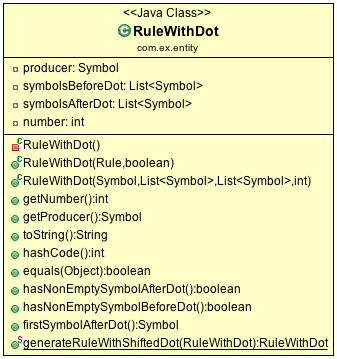
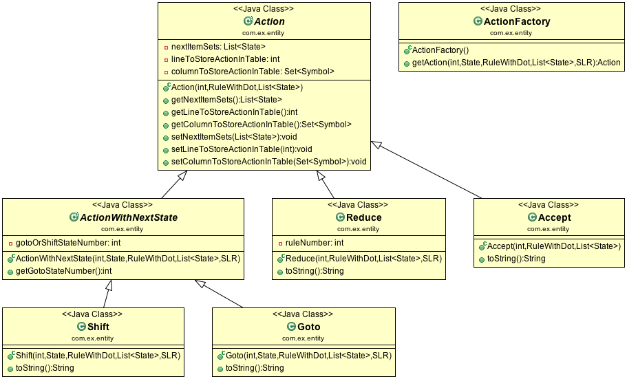

Projeto de Compiladores

2 Objetivos
O objetivo é criar um programa que, dada uma gramática de entrada, produza e apresente passo-a-passo o cálculo dos conjuntos FIRST e FOLLOW e da construção das tabelas LL e LR.
3 Justificativa
Existem diversas ferramentas que geram as tabelas, mas geralmente os passos são omitidos ou o código é muito complexo. Neste projeto, tentamos ao mesmo tempo apresentar na saída do programa cada etapa do processo e manter o código legível e simples, mesmo quando isso significar ser menos eficiente. Deste modo, o programa beneficia aqueles que estão estudando os conceitos teóricos e também é de fácil entendimento àqueles que desejam estendê-lo.
Além disso, justificamos várias decisões do ponto de vista de Engenharia de Software em Adendo - notas sobre algumas decisões de design, apresentando na prática como várias boas práticas de programação podem ser aplicadas.
4 Metodologia
Decidimos utilizar a linguagem Java para a implementação, especialmente pelo fato de ser estática (o que previne muitos bugs na fase de compilação), orientada a objetos (fazendo com que seja possível abstrair muitos conceitos em classes, tornando o código organizado e simples de entender) e popular.
O código do projeto está disponível na pasta sources. Além disso, a versão
mais atual pode ser encontrada em https://github.com/ufabcompiladores/projetofinal.
Utilizamos o Spring Framework (https://spring.io/). Assim, o front end é web, podendo ser acessado de qualquer navegador.
5 Funcionamento
5.1 Produção de cadeia vazia
O cálculo dos conjuntos FIRST e FOLLOW exigem em diversos momentos saber se um determinado não terminal produz ε. Por exemplo, considere a sequência de símbolos ABC. Queremos calcular FIRST(ABC). Sabemos que
FIRST(ABC) = FIRST(A) ⊕ FIRST(BCD)
e o resultado desta operação é somente FIRST(A) se \(A\) não produz ε ou FIRST(A) - ε se ε ∈ FIRST(A). Então é conveniente saber de antemão quais símbolos produzem ε.
Para tanto, usa-se o método buildAllNonTerminalsThatProduceEps na classe
Grammar. O algoritmo utilizado é simples: primeiro, verifica-se todos os não
terminais que produzem diretamente ε, isto é, aqueles que têm uma regra
que produz ε sem etapas intermediárias, como em \(A \rightarrow \epsilon\).
Em seguida, todas as regras são percorridas, e se todos os símbolos da parte direita de uma regra produzem ε, então adicionamos o produtor dessa regra à lista de não terminais que produzem ε. Todas as regras são percorridas novamente até que nenhum símbolo novo tenha sido adicionado à lista de símbolos que produzem ε. Em outras palavras, até que o ponto fixo seja atingido.
Por exemplo, considere a seguinte gramática:
A → BC
B → ε
C → ε
A tabela a seguir mostra o resultado desse algoritmo aplicado à gramática anterior em cada iteração.
| Produz ε? | A | B | C |
| Iteração 1 | não | sim | sim |
| Iteração 2 | sim | sim | sim |
| Iteração 3 | sim | sim | sim |
Na iteração 3, o conjunto de elementos que produzem ε não mudou, e assim o algoritmo termina.
O código é apresentado a seguir.
private final void buildAllNonTerminalsThatProduceEps() { Set<Symbol> nonTerminalsThatGenerateEps = new HashSet<Symbol>(); // rules that directly generate eps for (Symbol nonTerminal : nonTerminals) { for (Rule rule : rules.get(nonTerminal)) { if (rule.producesEmptyString()) { nonTerminalsThatGenerateEps.add(nonTerminal); } } } // iterates until fp is found boolean newNonTerminalThatGeneratesEpsHasBeenFound = true; while (newNonTerminalThatGeneratesEpsHasBeenFound) { newNonTerminalThatGeneratesEpsHasBeenFound = false; int setSizeBeforeIteration = nonTerminalsThatGenerateEps.size(); for (Symbol nonTerminal : nonTerminals) { for (Rule rule : rules.get(nonTerminal)) { // verifies if all symbols from rule produce eps List<Symbol> production = rule.getProduction(); boolean allSymbolsFromProductionProduceEps; allSymbolsFromProductionProduceEps = production .stream() .allMatch(symbol -> nonTerminalsThatGenerateEps.contains(symbol)); // if so, add it to set if (allSymbolsFromProductionProduceEps) { nonTerminalsThatGenerateEps.add(nonTerminal); } } } // verifies whether some non terminal has been added to set int setSizeAfterIteration = nonTerminalsThatGenerateEps.size(); if (setSizeBeforeIteration != setSizeAfterIteration) { newNonTerminalThatGeneratesEpsHasBeenFound = true; } } // initialise Map Map<Symbol, Boolean> producesEps = new HashMap<Symbol, Boolean>(); for (Symbol nonTerminal : nonTerminals) { producesEps.put(nonTerminal, nonTerminalsThatGenerateEps.contains(nonTerminal)); } for (Symbol terminal : terminals) { producesEps.put(terminal, false); } this.nonTerminalsToProducesEps = producesEps; }
5.2 Representação dos conjuntos FIRST e FOLLOW
Uma das principais funcionalidades do programa deste trabalho é não só calcular os conjuntos FIRST e FOLLOW, mas fazer isso apresentando as etapas intermediárias, fazendo com que o usuário veja cada passo do algoritmo. Isso faz com que o cálculo desses conjuntos não seja o mais eficiente possível, pois precisamos lidar também com o output sem pular nenhuma etapa.
Para isto, criamos classes First e Follow. Estas classes têm atributos que
indicam a representação do conjunto dado em termos de outros conjuntos.
Por exemplo, considere os seguintes atributos da classe Follow:
private Set<Symbol> firstSets; private Set<Symbol> firstSetsWithoutEps; private Set<Symbol> followSets; private Set<Symbol> terminals; private boolean hasEOF;
Suponha que um objeto dessa classe tenha as seguintes atribuições (aqui em notação de teoria dos conjuntos):
firstSets = {A}
firstSetsWithoutEps = {B, C}
followSets = {D}
terminals = {a, b}
hasEOF = true
Então esse conjunto seria
FIRST(A) ∪ (FIRST(B) - ε) ∪ (FIRST(C) - ε) ∪ FOLLOW(D) ∪ {a} ∪ {b} ∪ {$}
Ambas as classes têm o método toString sobrescrito para exibir essa
representação como mostrado acima e um método getAllElements que coleta
todos os elementos vindos da união dos conjuntos.
5.3 Cálculo dos conjuntos FIRST e FOLLOW
De maneira semelhante à computação de todos os não terminais que geram ε, o cálculo dos conjuntos FIRST e FOLLOW consiste, em essência, em iterar até encontrar um ponto fixo.
Note que a aplicação direta da definição de FIRST e FOLLOW não funciona, pois ela falharia no caso de definições recursivas que são dependentes entre si. Por exemplo, considere o caso em que FIRST(A) = FIRST(B) e FIRST(B) = FIRST(A). Para calcular FIRST(A), calcula-se FIRST(B). Mas FIRST(B) é FIRST(A), o que resulta num loop infinito. Em vez disso, começamos com todos os conjuntos FIRST setados para ∅, e a cada iteração atualizamos todos os conjuntos até atingir um ponto fixo.
O código a seguir mostra a implementação desse algoritmo para o cálculo dos conjuntos FIRST.
public final void buildAllFirstSets() { // Initialize set // omitido // Get description of each first set Map<Symbol, First> firstSetDescriptions = buildAllFirstSetDescriptions(); // Iterate until fixed point is found boolean someFirstSetHasChanged = true; while (someFirstSetHasChanged) { StringBuilder iterationSb = new StringBuilder(); iterationSb.append("New iteration (building first sets)\n"); someFirstSetHasChanged = false; // Copy elements from old first sets to new first sets // omitido // Updates, possibly getting new elements for (Symbol nonTerminal: nonTerminals){ iterationSb.append(String.format("Updating First(%s)\n", nonTerminal)); First firstDescription = firstSetDescriptions.get(nonTerminal); iterationSb.append(String.format("First(%s) = %s\n", nonTerminal, firstDescription)); int numElementsBefore = firstSetsBeforeIteration.get(nonTerminal).size(); firstSetsAfterIteration.get(nonTerminal).addAll(firstDescription.getAllElements(firstSetsBeforeIteration)); iterationSb.append(String.format("Adding elements: %s\n", firstDescription.getAllElements(firstSetsBeforeIteration))); int numElementsAfter = firstSetsAfterIteration.get(nonTerminal).size(); if (numElementsBefore != numElementsAfter){ someFirstSetHasChanged = true; } } iterationSb.append(String.format("All elements form first sets before iteration: %s\n", firstSetsBeforeIteration)); iterationSb.append(String.format("All elements form first sets after iteration: %s\n\n", firstSetsAfterIteration)); firstSetsBeforeIteration = firstSetsAfterIteration; } this.firstSets = firstSetsBeforeIteration; }
O cálculo dos conjuntos FOLLOW é bastante semelhante, e por isso é omitido.
5.4 TODO LL
5.5 SLR
5.5.1 Regras
Usamos a classe RuleWithDot para representar os itens dos estados.
Um objeto dessa classe têm listas de símbolos para representar o que vem antes e
depois do ponto. Por exemplo, a regra A → BC.DE teria BC em
symbolsBeforeDot e DE em symbolsAfterDot.

O método generateRuleWithShiftedDot serve para gerar um novo objeto do tipo
RuleWithDot com o ponto deslocado para a direita. Usando o exemplo anterior, o
objeto gerado a partir de A → BC.DE representaria A → BCD.E.
Note que o objeto retornado é um novo. Não há efeitos colaterais.
5.5.2 Ações
Ações no contexto da tabela SLR são representadas por classes.
Além de ter um tipo específico, uma Action contém atributos para indicar sua
posição na tabela, a saber, lineToStoreActionInTable e columnToStoreActionInTable.
Assim, a partir de uma lista de todos os objetos do tipo Action gerados é
possível construir a tabela SLR.

As ações Shift e Goto têm o método getGotoStateNumber, cujo resultado é
armazenado em gotoOrShiftStateNumber.
Esse atributo armazena o número do estado que deve ser usado após executar a
ação. Por exemplo, para um objeto Shift que representa a ação shift 8, esse
número é 8. Note que esse número pode indicar um estado que já existe ou um
novo.
Além disso, todas as ações têm um atributo nextItemSets que possui uma lista
de todos os estados descobertos após essa ação. Se a ação é Accept ou
Reduce, essa lista é exatamente a mesma de antes. Por outro lado, no
caso de Shift e Goto, calcula-se goto(q, a), em que q é o estado sendo
analisado e a é o primeiro símbolo após o ponto, e se o resultado de goto(q,
a) não estiver na lista de estados conhecida até então, um novo estado é
adicionado a ela. Se o resultado de goto(q, a) já estiver na lista de estados,
então esta permanece a mesma.
O código abaixo ilustra esse processo no caso do ActionWithNextState.
public ActionWithNextState(int currentStateNumber, State state, RuleWithDot ruleWithDot, List<State> allStates, SLR slr) { super(currentStateNumber, ruleWithDot, allStates); List<State> newItemSets = new ArrayList<State>(); newItemSets.addAll(allStates); // Sets next state number and the new list of states. State nextState = slr.gotoSet(state, ruleWithDot.firstSymbolAfterDot()); this.gotoOrShiftStateNumber = slr.getStateNumber(nextState, allStates); if (gotoOrShiftStateNumber == allStates.size()) { newItemSets.add(nextState); } setNextItemSets(newItemSets); }
Note que newItemSets é uma nova lista de estados. Assim, não há efeitos
colaterais envolvidos.
5.5.3 Algoritmo
Ainda à maneira do cálculo dos conjuntos anteriores, o algoritmo consiste em adicionar novos estados à lista de estados até encontrar um ponto fixo. No entanto, a implementação é um pouco mais complicada, pois o conjunto de estados que estamos iterando é alterado durante a iteração.
private final void buildAllItemSets() { System.out.println("\n\n\n=============================="); System.out.println("Building all states."); // adding first state System.out.println("Adding first state set:"); List<State> allStatesBeforeIteration = new ArrayList<State>(); Set<RuleWithDot> firstRuleSet = grammarWithDots.get(grammar.getStartSymbol()); State firstState = closure(new State(firstRuleSet)); allStatesBeforeIteration.add(firstState); ActionFactory actionFactory = new ActionFactory(); int indexOfLastStateInWhichAllRulesWereAnalysed = -1; boolean setOfAllStatesHasChanged = true; while (setOfAllStatesHasChanged) { System.out.println("******* New iteration (building all state sets) *******"); setOfAllStatesHasChanged = false; List<State> allStatesAfterIteration = new ArrayList<State>(); allStatesAfterIteration.addAll(allStatesBeforeIteration); for (int currentStateNumber = indexOfLastStateInWhichAllRulesWereAnalysed + 1; currentStateNumber < allStatesBeforeIteration.size(); currentStateNumber++) { State state = allStatesAfterIteration.get(currentStateNumber); System.out.format("Analysing state %s: %s\n", currentStateNumber, state); for (RuleWithDot ruleWithDot : state.getRules()) { System.out.println("~~Analysing rule~~"); System.out.format("Analysing rule: %s\n", ruleWithDot); Action act = actionFactory.getAction(currentStateNumber, state, ruleWithDot, allStatesAfterIteration, this); this.allActions.add(act); System.out.format("\nCreating action: \n %s\n", act); System.out.format("Action position:\n Line: %s \n Columns: %s\n\n", act.getLineToStoreActionInTable(), act.getColumnToStoreActionInTable()); allStatesAfterIteration = act.getNextItemSets(); } indexOfLastStateInWhichAllRulesWereAnalysed++; } if (allStatesAfterIteration.size() != allStatesBeforeIteration.size()) { setOfAllStatesHasChanged = true; } allStatesBeforeIteration = allStatesAfterIteration; } System.out.format("All state sets found: %s", allStatesBeforeIteration); this.allStates = allStatesBeforeIteration; }
O código itera do último estado completamente analisado (isto é, cujas
regras já tiveram as ações correspondentes criadas) até o último estado conhecido.
Para cada item de cada estado é criada uma ação. Um objeto da classe
ActionFactory decide qual é o tipo de ação a ser criada analisando qual é o
símbolo após o ponto. Após a criação da ação, esta tem seu método
getNextItemSets executados, que retorna a nova lista de estados (possivelmente com
um novo estado, se a ação criada for um Shift ou Goto).
6 Próximos passos
A construção deste programa mostrou-se bastante trabalhosa, e à medida em que o desenvolvimento avançou, foi possível detectar alguns pontos que ainda podem melhorar. Listamos a seguir quais seriam os próximos passos para aperfeiçoar o código.
- Simplificar o método
buildAllItemSets. É possível usar umwhileem vez deforeach, de tal forma que não é necessário fazer a distinção entre conjunto de estados antigo e novo. - É fortemente recomendada a inclusão de
unit testspara métodos que envolvem computações importantes nos algoritmos, tornando futuros refactorings mais seguros. - Buscar utilizar mais métodos de programação funcional introduzidos no Java 8 quando isso tornar o código mais simples.
7 Conclusão
8 Adendo - notas sobre algumas decisões de design
8.1 Objetos em estados inconsistentes
É desejável que um objeto tenha um estado consitente imediatamente após sua
criação. Em termos prático, isso significa usar seu construtor para setar todos
os atributos necessários. O contrário disso (e, portanto, não recomendado) é não
inserir nada no construtor e depois colocar valores nos atributos através de setters.
Essa prática torna o código menos seguro, pois enquanto todos os atributos não
estão setados, o objeto está num estado inconsistente. Nesse contexto, acessar um
atributo não inicializado retornaria null.
Exemplo de código que segue esse princípio:
public Grammar(String inputGrammar) throws Exception { initialiseOutputMap(); this.numberOfRules = 0; this.rules = new HashMap<Symbol, Set<Rule>>(); this.terminals = new HashSet<Symbol>(); this.nonTerminals = new HashSet<Symbol>(); isValidGrammar(inputGrammar); this.startSymbol = addStartSymbol(inputGrammar); addNonTerminals(inputGrammar); addTerminals(inputGrammar); readAllRules(inputGrammar); buildAllNonTerminalsThatProduceEps(); buildAllFirstSets(); buildAllFollowSets(); printOutput(); }
8.2 Minimização de acessibilidade
Classes que não serão estentidas devem ser declaradas como final. O mesmo vale
para métodos que não devem ser sobrescritos.
// exemplo public final class Rule {
Os atributos e métodos devem ter a menor visibilidade possível. Em
geral, isso significa usar private sempre que possível.
Além disso, é recomendável minimizar o uso de acessors. getters e setters devem ser adicionados apenas quando necessário. Em vez deles, é preferível criar métodos que, acessando a informação interna do objeto, retorne o que foi pedido. Isto está em acordo com o princípio "Tell, Don't Ask". A aplicação desse princípio mostrou-se difícil para o projeto, pois a interação entre objetos nos algoritmos depende essencialmente de seus atributos.
// extraído da classe RuleWithDot // não há acessor para o atributo symbolsAfterDot, // pois em momento algum há necessidade de saber isso. // No entanto, outras classes podem precisar do símbolo após o ponto. // Elas devem usar o método abaixo. // O incorreto seria criar um getter para symbolsAfterDot e fazer com // que as demais classes o usassem, seguidos de get(0). // Isso violaria o encapsulamento da classe RuleWithDot. public Symbol firstSymbolAfterDot() { return symbolsAfterDot.get(0); }
Este princípio está descrito em Effective Java - Item 13: Minimize the accessibility of classes and members.
8.3 Minimização de mutabilidade
Algumas classes representam entidades imutáveis. Por exemplos, uma classe Coordenada
que tem um par de inteiros como atributos e que representa uma coordenada deve
ser imutável. Criar um setter para esta classe seria absurdo, pois o mesmo
objeto poderia representar uma infinidade de coordenadas diferentes.
Além disso, mutabilidade pode tornar o código complexo e de difícil compreensão.
Identificamos classes que representam entidades imutáveis e nos certificamos que
seus objetos de fato não podem jamais ser alterados. A classe Symbol ilustra
isso bem.
// classe é marcada como final public final class Symbol { // atributos são privados private SymbolType type; private String literalRepresentation; // não há setters public Symbol(String literalRepresentation) throws Exception { super(); this.literalRepresentation = literalRepresentation; this.type = getType(literalRepresentation); }
Este princípio está descrito em Effective Java - Item15: Minimize mutability.
8.4 Sobrescrever hashCode e equals
Em diversos momentos utilizamos equals. Por exemplo, em SLR, quando
o conjunto goto de uma ação é calculado, verificamos se o conjunto é igual a algum
estado que já está represente na lista de estados. Para tanto, equals é usado
para comparar objetos da classe State.
Isso só é possível de ser feito de forma correta porque hasCode também foi
sobrescrito. Isso acontece porque ao checar a igualdade de objetos, antes de
de fato executar o código sobrescrito em equals, verifica se os códigos hash
dos dois objetos são iguais. Se não são, então a comparação resulta em false,
mesmo se todas as condições do equals fossem satisfeitas.
// extraído da classe Symbol @Override public int hashCode() { final int prime = 31; int result = 1; result = prime * result + ((literalRepresentation == null) ? 0 : literalRepresentation.hashCode()); result = prime * result + ((type == null) ? 0 : type.hashCode()); return result; } @Override public boolean equals(Object obj) { if (this == obj) return true; if (obj == null) return false; if (getClass() != obj.getClass()) return false; Symbol other = (Symbol) obj; if (literalRepresentation == null) { if (other.literalRepresentation != null) return false; } else if (!literalRepresentation.equals(other.literalRepresentation)) return false; if (type != other.type) return false; return true; }
Este princípio está descrito em Effectie Java- Item 9: Always override hashCode when you override equals.